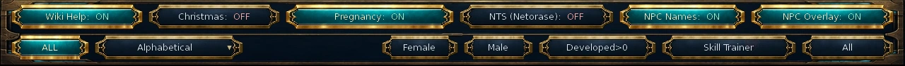
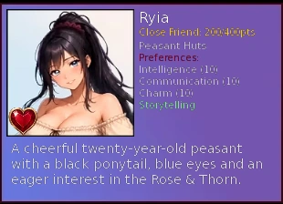
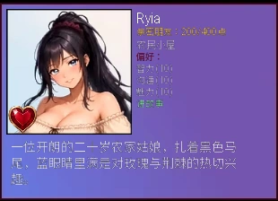

Select a screenshot to enlarge it. Screens show example inventories and progress.
Relationship points are one part of a route
A relationship combines points, story progress, heart-to-heart conversations, dates and individual intimacy experience. A high stage helps, but it does not replace a required conversation, location, item or personal-story event.
A practical approach is to finish newly available story actions and H2Hs, use a variety of safe daily activities, and check the character’s next date or private-encounter requirements. Bring enough time, Wealth and Energy for the displayed action and any later branch costs.
The Relationships screen helps you track people and preferences. Additional information appears as you learn discovery skills; missing detail is not necessarily missing progress.
Point stages and commitment are separate
The shared point ladder is:
| Stage | Total points |
|---|---|
| Stranger | 0 |
| Acknowledged | 10 |
| Known | 25 |
| Acquaintance | 50 |
| Friend | 100 |
| Close Friend | 200 |
| Crush | 400 |
| Romantic | 800 |
| Intimate | 1,600 |
| In Love | 3,000 |
Points can keep rising after 3,000, even though In Love remains the highest standard romance stage. Male relationship cards use Ally, Mentor, Confidant and Brother for the corresponding 400, 800, 1,600 and 3,000 tiers. Particular characters may use a shorter progression or have no relationship progression.
Casual, Dating and Serious are a separate commitment status set by a character’s story or conversations. Some current routes use these statuses. Raising points does not automatically change commitment, and reaching Intimate does not mean an intimate scene has already been completed.
Valkyra’s 399-point gate
Positive gains stop at 399 until Valkyra has been found or recruited as a worker. Her current work assignment or vacation does not remove an already met recruitment requirement. More gifts cannot push through the gate before that progress.
Reading the Relationships screen
| Skill or control | What it reveals or changes |
|---|---|
| Data Mining | Relationship point progress and the next stage threshold; also enables the optional NPC Overlay control. |
| Researching | The character’s preferred player-stat thresholds. |
| Networking | The character’s favorite special skill. |
| Information Brokering | The character’s current scheduled location. |
| Reading People | Richer descriptions and daily-use warning colors. |
| Soul Sight | Alignment information on cards. |
| NPC Names | Toggles optional name labels independently of those discovery skills. |
Sorting and filters help narrow the roster. A location depends on the current hour and availability; a vacationing character or a character on another assignment may not be at the usual address.
Once a character has individual intimacy experience, the card’s heart icon opens View Erotic Experience. This is a separate statistics panel, explained below.


Improving relationship rewards
Most rewards begin with an action’s base points and then vary with your setup. Each met preferred-stat threshold adds +1 before the favorite-skill multiplier; owning the listed favorite skill doubles that running subtotal. Ordinary preferred-stat thresholds include applicable equipment modifiers, unlike the raw stat checks used by H2H choices. These bonuses make learning preferences worthwhile.
1 Ring and an active Cologne buff add to the reward calculation. Attractiveness can add another point probabilistically: its ordinary chance caps at 50%, or 60% with Ornate Locket. Matching active alignment improves the final range; opposing Good/Evil alignment reduces it. Direct care or special rewards can follow different award rules.
Other permanent relationship bonuses
| Item | Shared reward effect |
|---|---|
| Draculas Ring | +1 maximum roll with a matching active alignment. |
| Balance Scales | Improves the minimum on a match, or restores part of the maximum on a mismatch. |
| Ocean Fragrance | +1 maximum roll with Neutral characters. |
| Demon’s Lure | +1 maximum relationship roll. |
| Grandmaster’s Signet | Another independent +1 maximum roll. |
| Heart’s Echo | 8% chance to double a positive relationship award when it is granted. |
A larger maximum is a better possible roll, not a guaranteed flat increase on every action. Alignment bonuses apply only while an alignment is active; the manual Unaligned setting can disable matching and mismatch adjustments.
Easy difficulty adds +1 to a positive ordinary relationship action’s base reward. That is not a blanket extra point on every story reward. Read the actual awarded amount rather than expecting every tooltip’s base number to be the final result.
Daily allowances and overuse
Safe uses are tracked per character, per action type, per game day. Talk usually has a different allowance from Relax, Work Together, a gift or a separate video action. Limits vary; many actions allow one use, while others allow several.
With Reading People, colors help:
| Color | Meaning for this use |
|---|---|
| White | At least one safe use will remain afterward. |
| Gold | This is the final safe use. |
| Red | The action is already beyond its safe allowance. |
Overuse is risky. Two Charm-based checks can let an attempt succeed, but repeated attempts become harder; a failure can reduce the relationship by up to 5 points. Switch action types or return the next day rather than treating a red action as harmless repetition.
A Time buff ordinarily reduces relationship-action time by 20%, but some systems have their own displayed costs. It does not add daily uses. End hours are exclusive: a 19:00–23:00 action must be started before 23:00.
Heart-to-hearts unlock more than points
Heart-to-heart conversations, or H2Hs, often appear as one-time character actions. Completing one can open the next date, invitation or private encounter. A scene requiring a specific H2H remains blocked even if your relationship already displays Romantic or In Love.
Choices can check ordinary player stats, Beast, raw Erotic or Fighting Experience, skills, items, money, another character’s relationship, or a previous response. Ordinary stat checks use raw stats rather than equipment-boosted values. Beast checks use effective Beast; experience checks use the raw total rather than its displayed level.
Finish the conversation to record its completion. Ordinary one-time H2Hs then disappear; repeatable conversations and resort activities follow their own limits. Different responses can affect points and route conditions, so read the choice requirements and the current quest guidance.
Character dates and special dates
Scripted dates are selected from the character’s own actions. They include early outings, later follow-ups and venue-specific routes, with requirements such as completed H2Hs, exact relationship totals, personal milestones, a building or a particular time window. Many are one-time scenes.
The visible date quote gives its time, money and Energy costs. There is no single Friend- or Romantic-stage unlock for every date, and a later follow-up may require the first date’s completion rather than more points alone.
Dating Outfit is not a universal date multiplier. It matters where a route explicitly checks it; Portia’s Shopping Trip needs level 3, and her preferred-stat bonus recognizes level 4. Use individual requirements before buying outfit upgrades solely for romance.
Abby’s Extreme Date
Abby also has a separate repeatable cinematic date at the Night Club, with eligible paid-content access, at least 1,000 relationship points, a base duration of 240 minutes and 50 Energy. It awards 100 base relationship points through the shared calculation. This is separate from the invitation quiz and its daily venue slot.
Repeatable KTV and Night Club invitations
Invitation dates are a separate system. The shared minimum is Crush, plus the invited character’s required personal progress. Use the venue’s candidate list to see eligible invitations.
| Venue | Start window | Base duration | Wealth | Energy |
|---|---|---|---|---|
| KTV | 20:00–23:00 | 120 min | $150 | 40 |
| Night Club | 20:00–23:00 | 120 min | $100 | 30 |
The Night Club also requires eligible supporter content access. Each venue permits one invitation per day; KTV and Night Club use separate allowances. The Bar is not an available invitation venue.
For these invitations specifically, Time halves duration and Power halves the Energy charge, rounding upward where needed. The displayed quote reflects these effects. Costs and the venue’s daily use are committed before the outcome.
Each date selects five questions without replacement and shuffles answer order. Answers score 0 or 1, and the optional gift adds 0 or 1 according to that character and venue.
| Score | Result | Base relationship reward |
|---|---|---|
| 0–3 | Early departure | 20 |
| 4–5 | Good date | 40 |
| 6 | Perfect date | 60 |
A perfect 6 needs all five correct answers and a +1 gift. A normal NPC gift action and an invitation gift do not share one universal preference table. A selected gift is spent even when the date does not reach a perfect outcome.
Supported invitation characters
Abby, Jessie, Maggie, Mindy, Emily, Rachel, Lucy, Summer, Katie, Portia, Kimi, Mary Ann, Miki, Rei, Torea, Zoe, Joey and Helsa. Their personal progress and current availability still determine which invitations you can use.
Live intimacy and individual experience
Private encounters, branching interactions and video actions have their own route gates, schedules, costs and repeat limits. There is no universal intimate-encounter action unlocked solely by one relationship stage.
Some interactive branches charge additional Energy after entry. If Energy is 10 or lower before a costed round, the encounter can move to its exit or fallback ending. Bring a reserve beyond the upfront cost if you want to complete a longer branch.
General Erotic Experience belongs to the player and is used by many choice requirements. NPC intimacy experience belongs to each individual character. The heart-icon panel shows that character’s total, overall level, activity experience and encounter records. New experience comes from supported live encounters; ordinary Extras replay does not train the relationship.
Where gallery rewards are available, their standard total-experience thresholds are 100, 250, 500, 800, 1,200, 1,700, 2,300 and 3,000. Not every character has all eight reward images. Refer to Total Experience when a route asks for an exact amount.
Content preferences and temporary blockers
The Relationships header includes Pregnancy and NTS (Netorase) controls, alongside Christmas and display options. These content preferences have real effects.
Pregnancy ON permits eligible deliberate pregnancy branches after their requirements are met. It does not turn ordinary intimacy into random conception. The switch locks on while any supported character is pregnant; visible pregnancy and recovery can postpone dates, H2Hs, lessons or shared scenes. See the Pregnancy guide for preparation and timing.
NTS (Netorase) controls eligible consensual sharing-themed content. Its house encounters also require their own operation and reputation conditions; enabling it does not replace those requirements or alter every romance scene.
Vacations at Sirena Isle and story assignments can temporarily change NPC availability. Return a vacationing character or visit the current assignment location before troubleshooting an otherwise eligible date. A one-time scene stays completed when an availability restriction lifts.
Claiming the 3,000-point Crystal reward
Each eligible character reaching 3,000 points or In Love can award one Crystal, once. Enter a bedroom in the Present player house to trigger the reward event. It can collect several pending character rewards in the same visit.
The reward is claimed there rather than directly from the NPC. Points can continue to rise, but they do not provide repeated copies of the same relationship Crystal.
When progress seems blocked
- No new scene at a high stage: check exact points, personal-story steps, finished H2Hs, location and starting hour.
- A choice is absent: read its stat and experience requirements, and check effective Beast, required skills or items, and prior choices.
- An invitation is missing: check Crush, the character’s personal prerequisites, venue time, daily use, content access and pregnancy restrictions.
- An encounter ended early: its later rounds may have needed additional Energy.
- Repeat Talk lost points: the safe daily allowance was exceeded.
- No Crystal at In Love: enter a Present-house bedroom for the automatic claim.
关系点数只是路线的一部分
角色关系同时涉及点数、个人剧情、谈心、约会与专属亲密经验。较高阶段能帮助推进，但不能代替指定对话、地点、物品或个人事件。
实用的推进方式是先完成新出现的剧情与谈心，再搭配多种安全的日常行动，并查看下一项约会或私下互动条件。除了界面列出的时间、财富和精力，也应为较长分支留出余量。
关系界面可帮助追踪人物与偏好，学习信息类技能后会显示更多细节；卡片信息较少，不一定是进度缺失。
点数阶段与交往状态分别计算
共用关系阶段如下：
| 关系阶段 | 累计点数 |
|---|---|
| 陌生人 | 0 |
| 已遇见 | 10 |
| 已知 | 25 |
| 相识 | 50 |
| 朋友 | 100 |
| 亲密朋友 | 200 |
| 迷恋 | 400 |
| 浪漫感 | 800 |
| 亲密 | 1,600 |
| 恋爱中 | 3,000 |
3,000点后仍可继续增加关系，但普通恋爱阶段最高仍显示「恋爱中」。男性关系卡在400、800、1,600、3,000对应档位分别使用盟友、导师、知己、兄弟。个别角色可能使用较短的阶段，或没有可增长的关系进度。
随性关系、交往中、稳定关系是另一条由个人剧情或对话设置的交往状态，部分现有路线会使用。增加点数不会自动改变交往承诺，达到「亲密」阶段也不代表已经完成某次亲密场景。
Valkyra 为什么停在399点？
尚未找到或招募 Valkyra 为员工前，正向关系增长最多到399。已经满足招募条件后，她当前的工作安排或度假不会撤销这一进度；前置未完成时，继续送礼也无法突破上限。
如何读懂关系界面
| 技能或控件 | 显示或改变什么 |
|---|---|
| 数据挖掘 | 显示关系点数进度与下一阶段门槛，也开放可选的NPC关系显示开关。 |
| 研究 | 显示角色偏好的玩家属性门槛。 |
| 人脉经营 | 显示角色偏爱的特殊技能。 |
| 情报交易 | 显示角色当前时间表中的地点。 |
| 识人术 | 提供更详细的说明与每日次数警示颜色。 |
| 灵魂视界 | 在卡片上提供阵营信息。 |
| NPC名称 | 单独切换可选姓名标签，不依赖上述信息技能。 |
排序和筛选可缩小查找范围。地点依当前时间与可见条件变化，度假或接受其他安排的角色可能不在原处。
角色已有个人亲密经验后，卡片上的爱心图标可打开「查看情趣经验」。这是一份独立统计，下面会说明它与全局经验的区别。

怎样提高关系奖励
大部分奖励从行动的基础点数开始，再按当前条件变化。每满足一项偏好属性门槛，先增加1点；持有偏爱的特殊技能，再使此时的数值翻倍。普通偏好属性门槛会计入适用的装备修正，与谈心选项使用的基础属性检查不同。因此，了解角色偏好有实际帮助。
一枚戒指和生效中的古龙水会参与奖励计算。吸引力也有概率再增加1点，普通概率最高50%，持有华丽吊坠盒时最高60%。当前生效阵营相合会改善最终范围，善恶对立则会降低范围。专门照护或其他直接奖励可能使用不同的发放规则。
其他永久关系加成
| 物品 | 共用奖励效果 |
|---|---|
| 德古拉之戒 | 当前生效阵营相合时，掷值上限+1。 |
| 平衡天秤 | 相合时改善下限，不合时补回部分上限。 |
| 海洋香氛 | 对中立角色的掷值上限+1。 |
| 恶魔诱饵 | 关系掷值上限+1。 |
| 棋艺大师印戒 | 再独立增加1点掷值上限。 |
| 心之回响 | 实际发放正向关系奖励时，有8%概率翻倍。 |
提高上限代表可能掷出更高奖励，不是每次保证固定多得同样点数。阵营匹配修正只在阵营生效时使用；手动无阵营开关可以停用匹配和不匹配修正。
简单难度会给正向普通关系行动的基础奖励再加1点，但并非每一项剧情奖励都统一加点。请以实际发放数量为准，不必期待提示中的基础数值就是最终结果。
每日次数与过度重复
安全次数按角色、行动类型和游戏日分别记录。交谈通常与放松、一起工作、送礼或另一项视频行动分开。各行动上限不同，许多每天一次，也有允许多次的行动。
持有识人术时，可参考颜色：
| 颜色 | 本次行动的含义 |
|---|---|
| 白色 | 使用后还会至少剩一次安全次数。 |
| 金色 | 这是最后一次安全使用。 |
| 红色 | 已超过安全次数。 |
超限并非无害。两次基于魅力的判定可能让尝试成功，但继续重复会越来越难，失败最多可使关系降低5点。可以改用其他行动类型，或等下一个游戏日再来。
时间增益通常让关系行动耗时降低20%，部分系统则使用自己的界面报价；它不会增加每日次数。结束时间不包含在内，19:00–23:00的行动需在23:00前开始。
谈心不只是增加点数
谈心通常作为角色的一次性行动出现，完成后可能开放下一次约会、邀请或私下互动。需要指定谈心的场景，即使关系已经显示「浪漫感」或「恋爱中」，也仍会被前置挡住。
选择可能检查普通属性、兽性、原始情趣或战斗经验、技能、物品、财富、与另一角色的关系，或先前回答。普通属性检查使用基础值，不计装备加成。兽性检查使用有效兽性，经验检查则看原始累计总量，而非显示等级。
完成整段谈心后才会记录完成。普通一次性谈心之后消失，可重复对话和度假活动则有各自限制。不同回答可能改变点数或路线条件，选择时应查看当前要求与任务提示。
角色约会与特殊约会
角色剧情约会从各自行动里选择，既有较早的出游，也有后续约会与特定场所路线。条件可能包括完成谈心、准确关系点数、个人进度、建筑或指定时段，许多只可完成一次。
约会行动会列出时间、财富与精力费用。不存在到达「朋友」或「浪漫感」就统一解锁所有约会的门槛；下一次约会也可能检查前次是否完成，而不是只看点数。
约会装不是所有约会的统一倍率。它只在具体路线要求时有作用。例如 Portia 的购物约会需要3级，她的偏好属性奖励认可4级；纯粹为了恋爱而升级前，应先看对应要求。
Abby 的极限约会
Abby 在夜店另有可重复的特殊剧情约会，需要对应付费内容权限、至少1,000关系点数，基础耗时240分钟并消耗50精力。其100点基础关系奖励会经过共用计算。这与邀请问答及每天的场所名额分别计算。
可重复的KTV与夜店邀请
邀请约会是另一套系统，共用最低阶段为「迷恋」，还需完成被邀请角色的个人前置。可在场所候选列表中查看目前能使用的邀请。
| 场所 | 开始时段 | 基础时间 | 财富 | 精力 |
|---|---|---|---|---|
| KTV | 20:00–23:00 | 120分钟 | $150 | 40 |
| 夜店 | 20:00–23:00 | 120分钟 | $100 | 30 |
夜店还要求相应支持者内容权限。每个场所每天可邀请一次，KTV与夜店分开计数，酒吧目前不能进行这类邀请。
对邀请约会而言，「时间」效果使耗时减半，「力度」效果使精力费用减半，需要时向上取整；界面报价会反映效果。费用与当天场所名额在结果出现前就会消耗。
每次从题库不重复抽取五题，回答顺序随机排列。每题得0或1分，可选礼物也按角色与场所另得0或1分。
| 分数 | 结果 | 基础关系奖励 |
|---|---|---|
| 0–3 | 提早离开 | 20 |
| 4–5 | 愉快约会 | 40 |
| 6 | 完美约会 | 60 |
完美6分需要五题全对，再加一件得1分的礼物。普通送礼行动与邀请礼物并不共用一张万能偏好表；选中的礼物即使没达成完美结果也会消耗。
支持邀请的角色
Abby、Jessie、Maggie、Mindy、Emily、Rachel、Lucy、Summer、Katie、Portia、Kimi、Mary Ann、Miki、Rei、Torea、Zoe、Joey、Helsa。仍需按各自个人进度与当前条件，决定哪些邀请已经能使用。
正常亲密互动与角色专属经验
私下互动、分支场景和视频行动，各有路线门槛、时间表、费用与重复限制。单靠某个关系阶段，不会统一开放所有角色的亲密行动。
部分互动分支进入后仍会额外消耗精力。付费回合前若精力已经不高于10，场景可能进入退出或替代结尾；想完成较长分支，应在初始费用之外多留一些精力。
全局情趣经验属于玩家，许多选择会直接检查它；角色专属亲密经验则按人物分别累计。爱心面板显示该角色的总量、综合等级、各活动经验与互动记录。新的经验来自支持计入的正常游玩互动，普通附加内容重播不会训练关系。
有对应画廊奖励的角色，默认总经验门槛为100、250、500、800、1,200、1,700、2,300、3,000，并非每个人都有八张奖励图。路线要求准确数量时，请看总经验而非等级。
内容偏好与临时阻挡
关系界面顶部有怀孕、NTS（寝取）、圣诞及显示选项，这些内容偏好会实际影响可用内容。
怀孕开启后，满足准备条件的角色可进入专门的怀孕分支，不会让普通互动随机受孕。任何受支持角色正在怀孕时，开关会锁定开启；显怀及恢复期间，部分约会、谈心、课程与多人剧情可能暂缓。准备与时间规则可查怀孕指南。
NTS（寝取）控制相应的、已知情同意的第三方亲密主题内容。店内遭遇还需要各自的经营类型与声誉条件，开关不能代替这些前置，也不会改写每段恋爱场景。
塞壬岛度假与剧情安排会暂时改变角色所在地。原地点没有选项时，可先接回度假角色，或到她目前被安排的地点查找。限制解除后，已完成的一次性场景仍然保持完成。
领取3,000点的水晶奖励
符合条件的角色达到3,000点或「恋爱中」后，可以提供一次1水晶。到现代玩家住处的任意卧室触发奖励事件，同次到访可合并领取多位角色尚未领取的奖励。
奖励在卧室自动领取，不是直接找角色拿。关系可以继续增加，但不会反复发放同一角色的这颗水晶。
进度卡住时检查什么
- 高阶段仍没有新场景：检查准确点数、个人剧情、完成的谈心、地点与开始时段。
- 选择没有显示：检查基础属性、原始经验、有效兽性、技能物品及先前回答。
- 邀请选项缺少：检查迷恋阶段、个人前置、场所时间、当天次数、内容权限与怀孕限制。
- 互动提早结束：后续回合可能还需要额外精力。
- 重复交谈反而扣点：可能已超过安全每日次数。
- 恋爱中却没有水晶：回现代住处卧室，等自动领取事件。
Adapted and updated from the community Chronoromancer Wiki. Community source and history · CC BY-SA 4.0. Game images © Chronoromancer Studio.